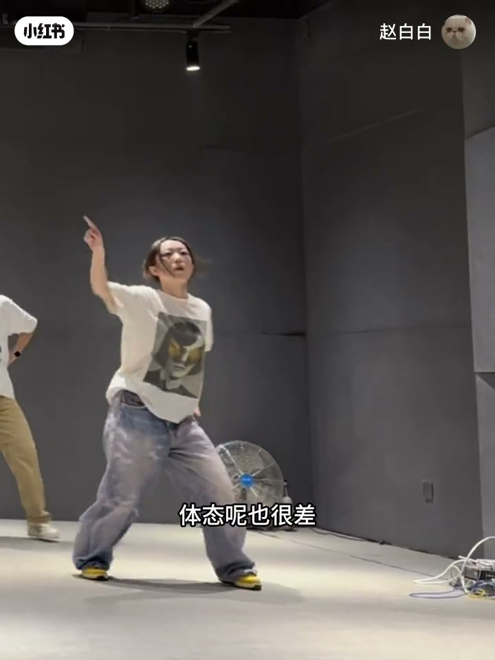
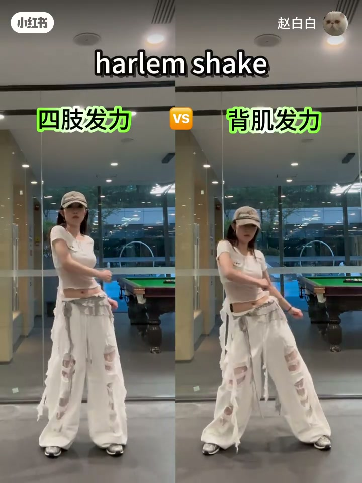
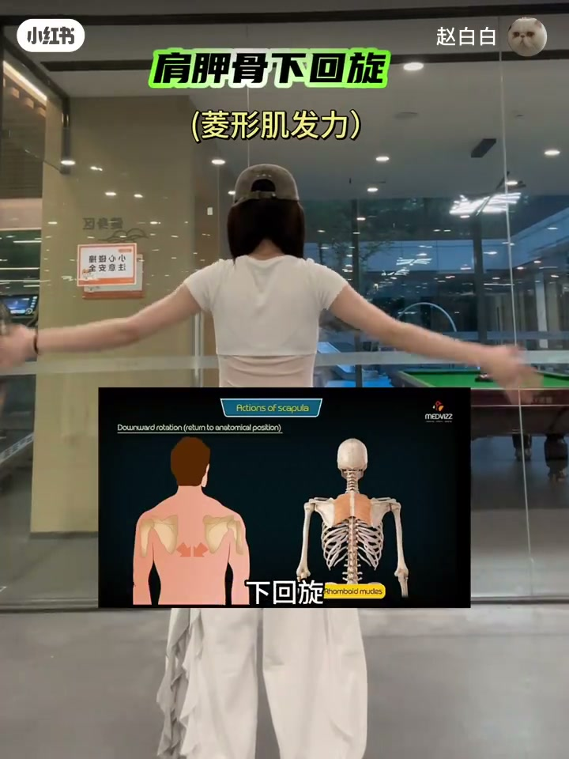
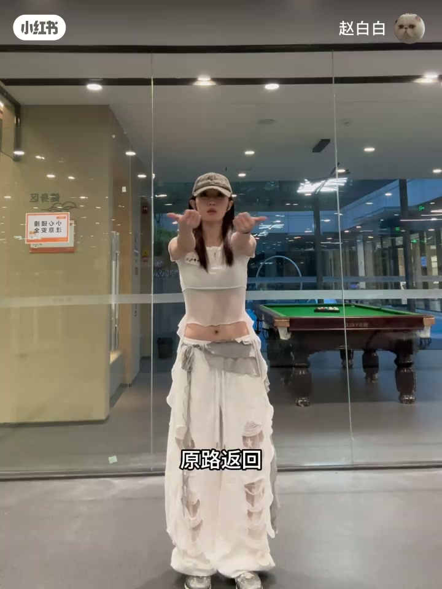
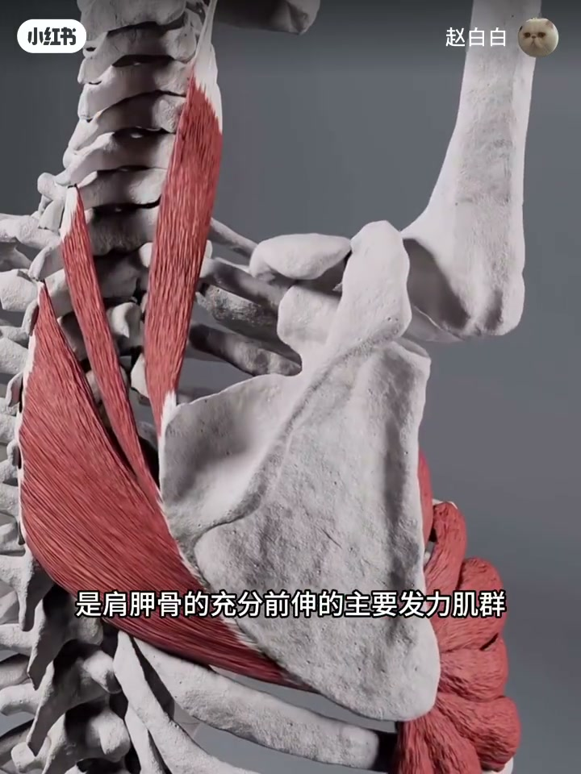

内容要点
「赵白白」用「公式解题」思路讲背肌发力：入门 Hip-hop 少练上肢、体态差时找不到后背感。第一公式是肩胛骨周边肌群（提肩胛肌、菱形肌、下斜方）与六向运动，沉肩=下沉；第二公式肩袖负责稳定而非前推；第三公式前锯肌负责肩胛前伸与出手。配合哈里摇对比、拇指后移与靠墙 W→Y 两个找感动作。
知识结构
老师总强调背肌发力；用「哪块肌解哪道动作题」的数学思维拆解。
提肩胛/菱形/下斜方；上回旋下回旋、外展内收、上提下沉；沉肩避耸肩。
哈里摇对比；拇指后移内收；靠墙 W 向上延伸感受内收下沉。
大臂架不起多因肩部力量不足；出手靠前锯肌前伸，成肩坠肘更稳。
跳舞说的「背肌发力」，底层常常是肩胛下沉+内收的控制；出手向前则要换前锯肌，别用背肌硬推。
00:00-01:20肩胛周边肌群与六个运动方向
作者自陈：入门 Hip-hop 多、上肢弱、体态差，长期找不到后背发力。老师强调跳舞要背肌发力，她用「公式」类比：提到某块肌肉，对应上肢什么动作。
第一公式：肩胛骨附近三组肌——提肩胛肌、菱形肌、下斜方肌，带动肩胛多方向运动。六向：上回旋、下回旋、外展、内收、上提、下沉；下沉即舞蹈常说的沉肩，可避免爱耸肩。口播指出：肩胛下沉+下回旋，是背肌发力模型的底层逻辑。


01:20-03:00找感动作，以及肩袖与前锯肌分工
哈里摇学习时第一次找到背部感知：加上「背往后靠」后动作明显更好，背面能看到肩胛运动。找感两招：①两拇指后移感受肩胛内收，原路返回重复；②靠墙双手呈 W，向上慢慢延伸（可不伸直成 Y），感受内收与下沉。框架撑开靠肩胛下沉，三块肌力量不够就会「直接放手」。
第二公式肩袖：四条小肌群在深层环绕肩关节；举铁上推/平举/飞鸟说明肩部负责提拉手臂——跳舞大臂架不起，常是肩部力量不足。但出手类动作，肩袖与背肌多负责牵拉稳定，而非向前释放。第三公式前锯肌：肩胛充分前伸的主力；打开肩胛、锁定肩背、成肩坠肘，上肢更稳定。片尾有平台水印段，可忽略。



完整转录（89段）
以下文本由 Whisper medium 模型自动转录，可能存在少量识别误差，已尽可能修正。
到底什么是背肌发力
看完视频包找到背肌发力感
之前呢因为跳入门HIPHOP比较多
很少练到上半身
加上我本身上肢力量就很弱
体态能也很差
一直找不到后背发力的感觉
学练舞后呢
老师们总是会强调跳舞一定要背肌发力
今天我一直在思考
到底什么是背肌发力
以及怎么找到背肚发力感呢
接下来我会用数学思维
给大家更清晰的解释
去提到某一块肌肉
参与到上肢是什么动作
这就有点像数学里什么公式
去解什么题
那么第一个公式就是肩胛骨周边肌群
从解剖学看肩胛骨附近的肌肉
也就是背肌呢有三款肌群
分别是肩胛蹄肌 菱形肌和下斜方肌
它们呢可以使肩胛骨有多个方向的运动
我记得我第一次找到背部的感知
竟然是因为哈里尧这个元素的学习
大家可以先来看一下对比
后面我加上背部发力
找背往后靠的感觉之后就好很多
从后面呢就可以更清楚
直观的看到后背肩胛骨的运动
那么这里呢
我们就需要了解肩胛骨的运动方向
肩胛骨的六个运动方向分别是
上回旋 下回旋
外展 内收 上提和下沉
其实下沉呢就是舞蹈中常说的沉肩
学会沉肩就可以有效避免跳舞
爱耸肩的问题
沉肩的教程呢之前也有发过
这里就不再赘述了
肩胛骨下沉下回旋
就是跳舞中常说的背肌发力模型的底层逻辑
是背肌发力重要的提变和终点
像这个框架呢
就是靠肩胛骨下沉把自己撑开
控制肩胛骨下沉的那三块肌群力量不够呢
就会像我这样直接放手
感受这个地上的发力呢
我有两个动作推荐
第一个呢就是
伸出我们两个大拇指头
向后迁移
感受肩胛骨的内收
原路返回 重复数次
第二个动作呢
找一面墙 贴住墙
手形成W形状
双手向上慢慢的延伸
可以不用伸直形成Y字
感受肩胛骨的内收和下沉
第二个公式呢
就是肩袖肌群
肩袖肌群呢
是四条小肌群在背后肌的深处
完全围绕着肩关节存在的
从健身举铁看肩部运动呢
无论是上推平举还是飞鸟
肩部的肌肉让我们的手臂向上提拉
所以说跳舞的时候大臂架不起来
主要还是因为肩部肌群力量不足
那么像这样
和这样负责出手的动作
肩袖肌群和背部肌群负责发力吗
答案是否定的
这两部分的肌肉大部分负责的是
牵拉的力而不是向前释放的力
大家可以找一个强势一下
把自己的中肘稳定住直露出肩胛骨
尝试肩胛肌群朝前发力
那么这个时候你能发多大的力呢
而且这样的发力靠的也不是肩部肌群和背肌
靠的是第三个公式前巨肌
前巨肌呢是肩胛骨的充分前伸的主要发力肌群
我们可以从大部分都是向前释放的
打群中获得思路
打开肩胛骨锁定肩背
成肩坠肘
这样的话上肢会更加稳定
优优独播剧场——YoYo Television Series Exclusive